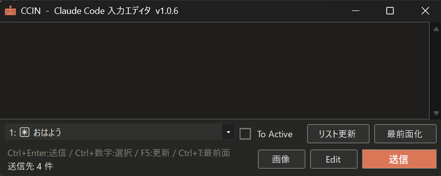
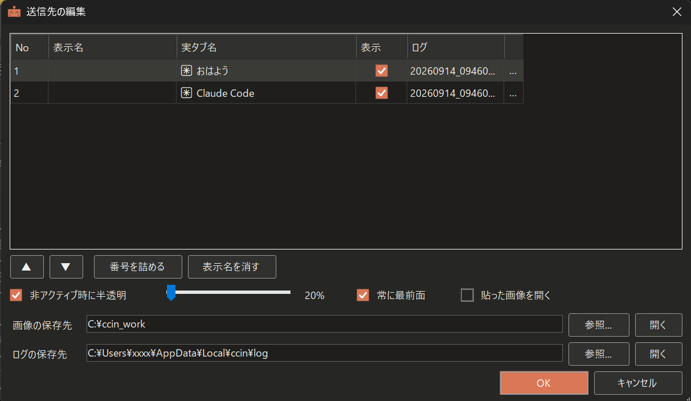

Windows Terminalから起動されたClaude Codeに送る文章を、じっくり書いてから送るための入力エディタにゃ。
使い方を読まずに使用すると誤動作による大損害が起きる危険があります。最後までしっかり読んでから、ご利用ください。
Windows 10 / 11（64bit）＋ Windows Terminal ＋ Claude Code
ZIP を好きなフォルダに展開し ccin.exe を実行にゃ。
インストーラは無いにゃ。
フォルダごと削除してにゃ。
設定は %LocalAppData%\ccin\ に残るので、完全に消すならそこも消してにゃ。
Zipファイルを解凍してccin.exeをダブルクリックして起動しますにゃ。

ここに、Claude Codeに送る文章を書きます。改行を使用できますにゃ。
起動中のTerminalが表示されますにゃ。
【テキスト入力エリア】に入力されたテキストを、
【クリップボード】にコピーし、【ドロップダウンリスト】で選択されたウィンドウに送信しますにゃ。
起動中のTerminalを確認し【ドロップダウンリスト】を最新にしますにゃ。
【ドロップダウンリスト】で選択されたウィンドウを最前面に持っていきますにゃ。
Win+Shift+S+範囲選択にてキャプチャし、【画像】ボタンを押すと、
クリップボードに保存されいるスクショを【画像の保存先】で指定されたフォルダに【日時.png】で保存し、
【テキスト入力エリア】の一番下の行にフルパスをテキストで入力しますにゃ。
【画面2. 送信先の編集ウィンドウ】を開きますにゃ。詳細は次の項目にて。
【ドロップダウンリスト】を無効化し操作できなくなります。
代わりに2秒ポーリングにて画面を監視し、【ドロップダウンリスト】を更新しますにゃ。
そして、現在ActiveになっているClaude Codeを自動でドロップダウンリスト選択状態にし、【送信】できるようにしますにゃ。
2秒ポーリングのため、「ウィンドウを選択 → 送信」を2秒未満でやると、意図しないウィンドウに送られる可能性があります。
【送信】する場合は、かならず【ドロップダウンリスト】に送りたいウィンドウが選択状態にあることを目視確認してください。にゃ。
Ctrl+Enter:送信
Ctrl+数字:Claude Codeウィドウ切り替え
F5:リスト更新
Ctrl+T:最前面化ON,OFF
CCINの状態を表示します。エラーなどがあればここに表示します。にゃ。

開いた順番に番号が振られます。ウィンドウが閉じられ欠番すると、新しくウィンドウが開かれたときに空いてる番号入ります。にゃ。
【ドロップダウンリスト】に表示させる名前を自分で決めることができます。にゃ。
【ドロップダウンリスト】で表示するウィンドウにつけられた名前を表示します。にゃ。
【ドロップダウンリスト】に表示する・しないを切り替えられます。にゃ。
【送信】を実行すると、送ったプロンプトの履歴をここで指定した名前のログファイルに保存されます。にゃ。
ログファイル名はCCIN起動時に決まります。起動時の【日時_枝番.log】になります。変更することも可能です。にゃ。
ログファイルを直接開きたいときに押します。ない場合は開けません。にゃ。
【リスト】の順を変更することができます。変更すると【ドロップダウンリスト】に表示される順番が変わります。にゃ。
Tarminalを開いたり閉じたりを繰り返すと、【No】に欠番がでたりするので、空いてる番号を詰めることができます。にゃ。
自分で設定した表示名を消して、【ドロップダウンリスト】に【実タブ名】を表示することができます。にゃ。
CCINのウィンドウを非アクティブ時に半透明化することができます。常に最前面にした時に便利です。にゃ。
CCINを常に最前面にします。にゃ。
メインウィンドウにて【画像】ボタンを使用し、クリップボードから作成された画像のプレビューの表示する・しないを切り替えることができます。にゃ。
【画像】ボタンを押したときの画像の保存先を指定します。にゃ。
ログの保存先を指定します。にゃ。
1. 本ツールは、CCINに入力されたテキストはクリップボードを経由し、ウィンドウに張り付けられます。
【送信】ボタンを押したら、「テキストがClaude Codeに送信されるのを確認するまで、画面操作を行わないでください。」
また、CCINを外部ツールなどから自動入力もしないでください。
クリップボードが混線し、意図しないプロンプトを別のウィンドウに張り付けたりすることになります。
2. 【To Activeチェックボタン】にも書きましたが、2秒ポーリングのため、
「ウィンドウを選択 → 送信」を2秒未満でやると、意図しないウィンドウに送られる可能性があります。
送信する場合は、かならず【ドロップダウンリスト】に送りたいウィンドウが選択状態にあることを「目視確認」してください。
3. Windows Terminalの素シェルなども【ドロップダウンリスト】に認識されます。(VS Code や Cursorの内臓ターミナルは対象外)
Claude Codeなどが起動されていない素のWindows Terminalなどは複数行入力に対応していません。
複数行を送ろうとすると意図しない動きになります。送らないでください。【Editボタン】から【表示】のチェックを外してください。
4. Claude Codeで上下キーで選択を求められているときに、テキストを【送信】すると、Enterだけが認識され、その選択を確定したということになります。
画面を確認し、「テキスト入力待機状態」にあることを目視確認してから【送信】してください。
にゃ。
1. 再起動すると、表示名・番号・Editの内容はリセットされます。
誤認識を避けるため、記憶する機能を付ける予定はありません。
2. CCINのメインウィンドウのサイズ、表示位置やEditウィンドウから設定できるCCIN本体に関する設定のみ保存されます。
ターミナルの情報に関するものは保存されません。
3. ほかの仮想デスクトップで開いているターミナルには送れません。
4. 送信ログは送った本文がそのまま残ります。秘密を含む文章を送ったら、ログも同じ扱いにしてください。
本プロジェクトは個人の趣味および研究用として開発されたプロトタイプです。
CCINは【送信】のたびに、選んだウィンドウへ文字を貼り付けて Enter を打ちます。 送り先を取り違えると、別のClaude Codeが無関係な指示で動き出し、 そのプロジェクトのファイルが書き換わったり、トークンを大量に消費したりします。 素のターミナルに送った場合は、本文がそのままコマンドとして実行されます。
個別PC環境での起動サポート、セットアップに関する質問回答、エラー対応等は一切致しません。 本ツールの使用によって生じたいかなる損害についても、作者は一切の責任を負いかねます。
にゃ。